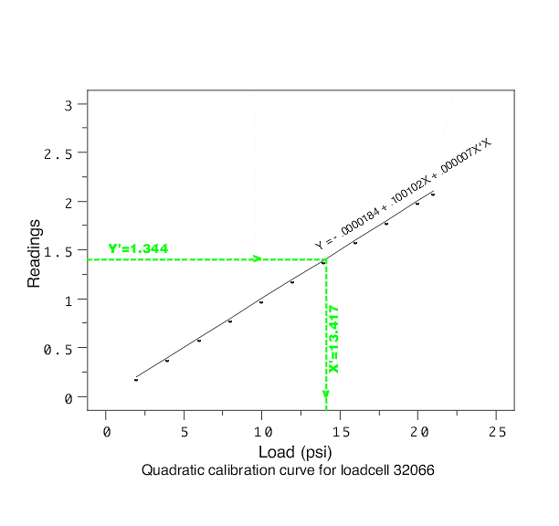

|
2.
Measurement Process Characterization
2.3. Calibration
|
|||
| Topics | This section discusses the creation of a calibration curve for calibrating instruments (gauges) whose responses cover a large range. Topics are: | ||
| Purpose of instrument calibration | Instrument calibration is intended to eliminate or reduce bias in an instrument's readings over a range for all continuous values. For this purpose, reference standards with known values for selected points covering the range of interest are measured with the instrument in question. Then a functional relationship is established between the values of the standards and the corresponding measurements. There are two basic situations. | ||
| Instruments which require correction for bias |
|
||
| Instruments whose measurements act as surrogates for other measurements |
|
||
| Basic steps for correcting the instrument for bias |
The calibration method is the same for both situations and requires
the following basic steps:
|
||
| Schematic example of a calibration curve and resulting value |
A schematic explanation is provided by the figure below
for load cell calibration. The loadcell
measurements (shown as *) are plotted on the y-axis against
the corresponding values of known load shown on the x-axis.
A quadratic fit to the loadcell data produces the calibration curve that is shown as the solid line. For a future measurement with the load cell, Y' = 1.344 on the y-axis, a dotted line is drawn through Y' parallel to the x-axis. At the point where it intersects the calibration curve, another dotted line is drawn parallel to the y-axis. Its point of intersection with the x-axis at X' = 13.417 is the calibrated value.  |
||